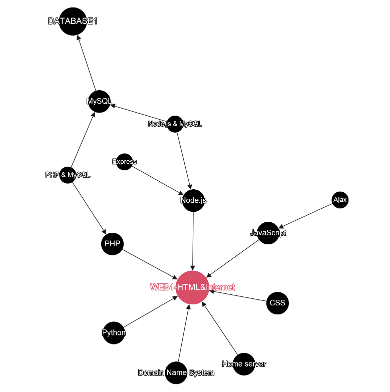

- 수업소개
- 프로젝트의 동기
- 기획
- 코딩과 HTML
- HTML 코딩 실습 환경 준비
- 기본 문법-태그 : strong u
- 혁명적인 변화 : h1~h6
- 통계에 기반한 학습
- 줄바꿈 : br p
- HTML이 중요한 이유
- 최후의 문법 속성과 img
- 부모 자식과 목록 : li ul ol
- 문서의 구조와 슈퍼스타들 : !doctype html
- HTML 태그의 제왕 : a
- 웹사이트 완성
- 원시웹
- 인터넷을 여는 열쇠 : 서버와 클라이언트
- 웹호스팅 (github pages)
- 웹서버 운영하기
- 수업을 마치며 1
- 수업을 마치며 2
- 수업을 마치며 3
- 코드의 힘 : 동영상 삽입
- 코드의 힘 : 댓글 기능 추가
- 코드의 힘 : 채팅 기능 추가
- 코드의 힘 : 방문자 분석기
21. 수업을 마치며 2
처음엔 큰 기능도 쉽게 만들어지지만
뒤로 갈수록 사소한 기능 하나를 추가하는 것도
어렵게 되면서
깊은 슬럼프에 빠지게 됩니다.
자기 탓이 아닙니다.
원래 그렇습니다.
공부를 그만두고,
즐겁게 만들면서,
한계에 스스로 직면하세요
22. 수업을 마치며 3
웹사이트를 아름답게 하고 싶다면
CSS를 공부하셔야 합니다.
사용자와 상호작용하는
웹페이지를 만들고 싶다면
JavaScript를 공부하셔야 합니다.
백엔드 기술

23. 코드의 힘 : 동영상 삽입
iframe